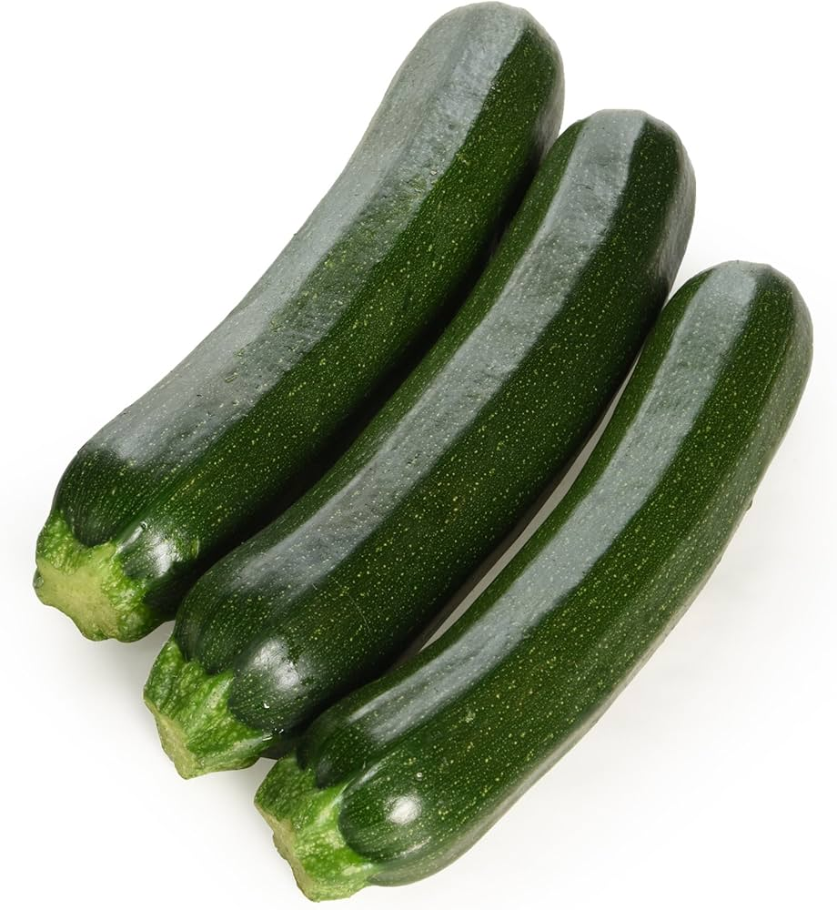
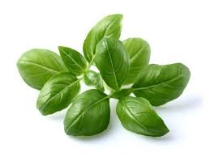

Ratatouille Recipe
Ratatouille is a cheap, healthy and tasty dish which can be enjoyed all year round. It makes a great side dish, but can also be used as a pasta sauce, or can be served with crusty bread for a light main meal.
Originally, ratatouille was considered as a peasant's dish due to its preparation and versatility. Now, however, it is made in some of the finest restaurants in the world.
This recipe will teach you how to make the tastiest restaurant-quality ratatouille.
Ingredients:
- 2 tbsp olive oil
- 1 medium-large aubergine, cut into 2cm chunks
- 3 small courgettes, sliced into moons
- 1 large red onion, roughly chopped
- 4 cloves garlic, minced or grated
- 2x 400g tins of chopped tomatoes
- 1 tbsp balsamic vinegar
- handful of fresh basil, chopped
- salt and pepper to taste


Serve with:
- Parmesan cheese, grated and sprinkled on top
- Crusty bread
Method:
- On a low heat, add the olive oil and onions to a large saucepan and sweat the onions until they are softened.
- Add the chopped aubergine and courgettes and continue to cook on a low heat until soft.
- Add the tomatoes, garlic, basil, balsamic vinegar, salt, and pepper to the pan and turn up the heat to medium. Simmer the ratatouille for 30 minutes until the tomatoes are cooked. Stir occasionally during simmering to prevent the vegetables from sticking to the bottom of the pan.
- Serve with a sprinkling of freshly grated parmesan cheese and some crusty bread.